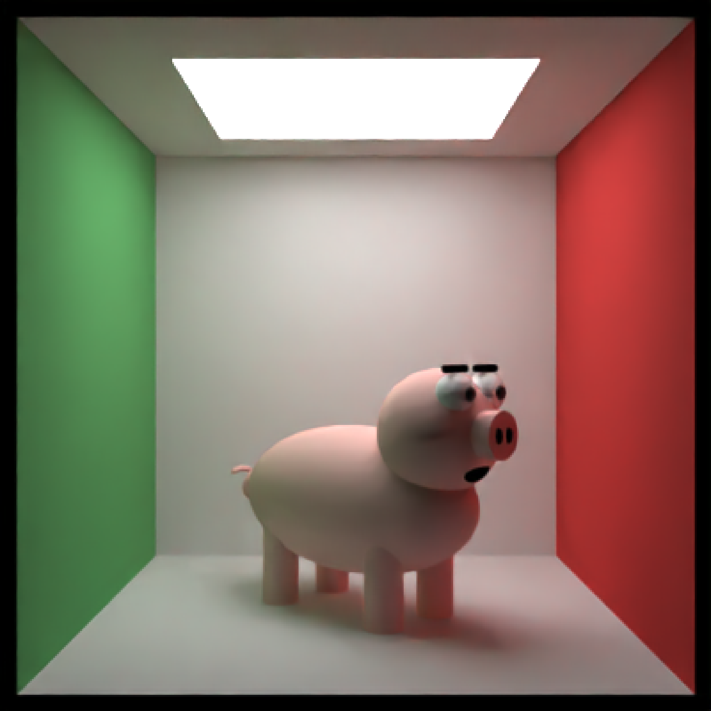
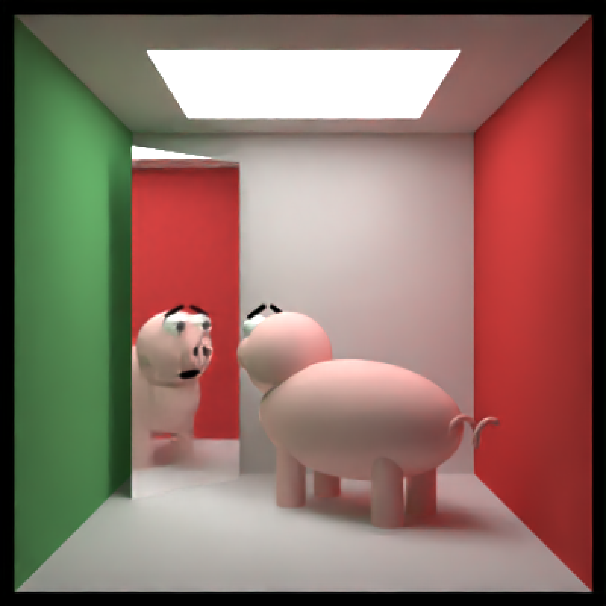
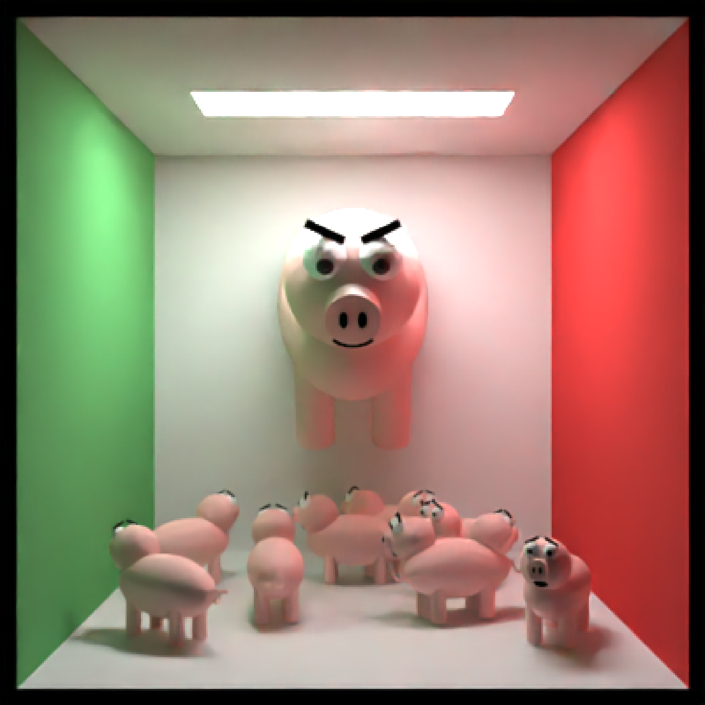
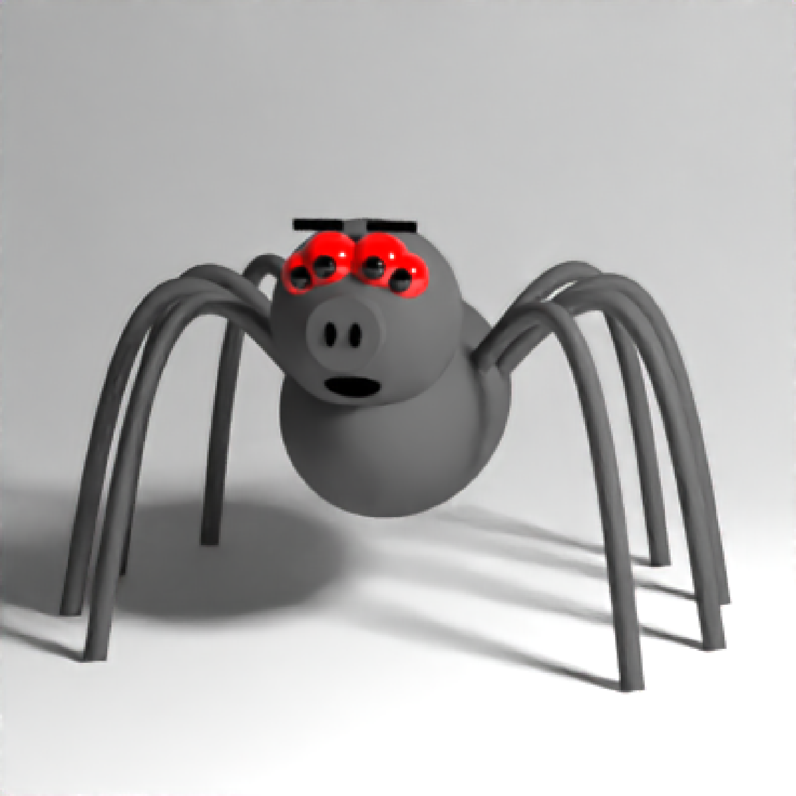

Pig Object
Default `0`. x-coordinate of the center of the pig.
Default `0`. y-coordinate of the center of the pig.
Default `0`. z-coordinate of the center of the pig.
Default `neutral`. Other options include `skeptical`, `worried`, and `angry`.
Default `FALSE`. Spiderpig.
Default `c(0, 0, 0)`. Angle of rotation around the x, y, and z axes, applied in the order specified in `order_rotation`.
Default `c(1, 2, 3)`. The order to apply the rotations, referring to "x", "y", and "z".
Default `c(1, 1, 1)`. Scale transformation in the x, y, and z directions. If this is a single value, number, the object will be scaled uniformly.
Default `0`. Controls the Oren-Nayar sigma parameter for the pig's diffuse material.
Single row of a tibble describing the pig in the scene.
#Generate a pig in the cornell box.
if(rayrender:::run_documentation()) {
generate_cornell() %>%
add_object(pig(x=555/2,z=555/2,y=120,
scale=c(80,80,80), angle = c(0,135,0))) %>%
render_scene(parallel=TRUE, samples=128,clamp_value=10)
}
#> Setting default values for Cornell box: lookfrom `c(278,278,-800)` lookat `c(278,278,555/2)` fov `40` .

if(rayrender:::run_documentation()) {
# Show the pig staring into a mirror, worried
generate_cornell() %>%
add_object(pig(x=555/2-70,z=555/2+50,y=120,scale=c(80,80,80),
angle = c(0,-40,0), emotion = "worried")) %>%
add_object(cube(x=450,z=450,y=250, ywidth=500, xwidth=200,
angle = c(0,45,0), material = metal())) %>%
render_scene(parallel=TRUE, samples=128,clamp_value=10)
}
#> Setting default values for Cornell box: lookfrom `c(278,278,-800)` lookat `c(278,278,555/2)` fov `40` .

if(rayrender:::run_documentation()) {
# Render many small pigs facing random directions, with an evil pig overlord
set.seed(1)
lots_of_pigs = list()
for(i in 1:10) {
lots_of_pigs[[i]] = pig(x=50 + 450 * runif(1), z = 50 + 450 * runif(1), y=50,
scale = c(30,30,30), angle = c(0,360*runif(1),0), emotion = "worried")
}
many_pigs_scene = do.call(rbind, lots_of_pigs) %>%
add_object(generate_cornell(lightintensity=30, lightwidth=100)) %>%
add_object(pig(z=500,x=555/2,y=350, emotion = "angry",
scale=c(100,100,100),angle=c(-30,90,0), order_rotation=c(3,2,1)))
render_scene(many_pigs_scene,parallel=TRUE,clamp_value=10, samples=128)
}
#> Setting default values for Cornell box: lookfrom `c(278,278,-800)` lookat `c(278,278,555/2)` fov `40` .

if(rayrender:::run_documentation()) {
#Render spiderpig
generate_studio() %>%
add_object(pig(y=-1,angle=c(0,-100,0), scale=1/2,spider=TRUE)) %>%
add_object(sphere(y=5,z=5,x=5,material=light(intensity=100))) %>%
render_scene(samples=128,lookfrom=c(0,2,10),clamp_value=10)
}
